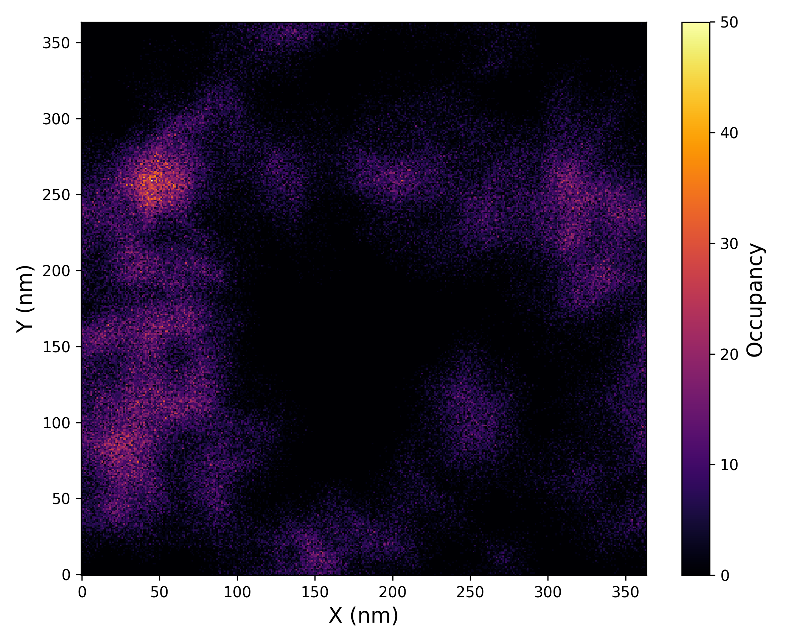

Ligand Density
Overview
DynamiSpectra provides a comprehensive and versatile analytical framework designed to quantify and monitor the spatial density distribution of ligand molecules within molecular dynamics simulations. Utilizing input data in standardized .xpm file format, this module enables researchers to characterize ligand localization, aggregation, and dynamic behavior within the simulated environment.
This analysis offers detailed insights into the spatial distribution of ligand density, facilitating the identification of preferential binding regions, ligand clustering, or dispersal events. The graphical outputs generated by DynamiSpectra enable straightforward visualization of ligand density patterns throughout the simulation, supporting qualitative and quantitative interpretation of ligand behavior.
Command line in GROMACS to generate .xvg files for the analysis:
gmx densmap -s Simulation.tpr -f Simulation.xtc -n index.ndx -o map.xpm -aver z
Explanation of Axes:
The generated density map is a 2D projection of ligand atomic positions onto the XY plane of the simulation box. This projection is done by averaging coordinates along the Z-axis over the trajectory frames.
X axis: corresponds to the simulation box’s X spatial coordinate (in nanometers)
Y axis: corresponds to the simulation box’s Y spatial coordinate (in nanometers)
This means that the labels “X” and “Y” on the plot directly represent physical coordinates in real space, consistent with the standard Cartesian coordinate system used in molecular dynamics.
def ligand_density_analysis(xpm_file_path, output_path=None, plot=True,
cmap='inferno', xlabel='X', ylabel='Y',
title='', colorbar_label='Relative density',
figsize=(6, 5), label_fontsize=12)
{kind=link}

Interpretation guidance: This plot illustrates the relative density distribution of ligand atoms throughout the simulation. Regions with higher density values correspond to areas where the ligand spent more time, indicating preferred binding locations or stable interaction zones. Conversely, areas with lower density indicate less frequent ligand presence or greater positional variability.
Complete code
import numpy as np
import matplotlib.pyplot as plt
import os
def read_xpm(file_path):
"""
Reads a .xpm file and converts it into a 2D matrix of density values.
Parameters:
-----------
file_path : str
Path to the .xpm file.
Returns:
--------
matrix : np.ndarray
2D array of density values.
"""
with open(file_path, 'r') as f:
lines = f.readlines()
# Keep only lines containing matrix content (i.e., starting with quotes)
lines = [l.strip() for l in lines if l.strip().startswith('"')]
# Parse the header line with matrix dimensions and color mapping details
header_line = lines[0].strip().strip('",')
width, height, ncolors, chars_per_pixel = map(int, header_line.split())
# Build the color symbol to value mapping
color_map = {}
for i in range(1, ncolors + 1):
line = lines[i].strip().strip('",')
symbol = line[:chars_per_pixel]
color_map[symbol] = i - 1 # Assign unique integer values for plotting
# Convert the symbol matrix into a numeric matrix
matrix = []
for line in lines[ncolors + 1:]:
line = line.strip().strip('",')
row = [color_map[line[i:i+chars_per_pixel]] for i in range(0, len(line), chars_per_pixel)]
matrix.append(row)
return np.array(matrix)
def plot_density(matrix, cmap='inferno', xlabel='X', ylabel='Y', title='',
colorbar_label='Relative density', figsize=(6, 5),
label_fontsize=12, save_path=None):
"""
Plots the ligand density matrix as a heatmap.
Parameters:
-----------
matrix : np.ndarray
The ligand density matrix.
cmap : str
Colormap used for the heatmap (e.g., 'inferno', 'jet').
xlabel, ylabel : str
Axis labels for the plot.
title : str
Title of the plot.
colorbar_label : str
Label for the colorbar.
figsize : tuple
Size of the figure (width, height in inches).
label_fontsize : int
Font size used for all text labels.
save_path : str or None
Path (without extension) where the plot will be saved.
"""
plt.figure(figsize=figsize)
img = plt.imshow(matrix, cmap=cmap, origin='lower', aspect='auto')
cbar = plt.colorbar(img)
cbar.set_label(colorbar_label, fontsize=label_fontsize)
plt.xlabel(xlabel, fontsize=label_fontsize)
plt.ylabel(ylabel, fontsize=label_fontsize)
plt.title(title, fontsize=label_fontsize + 2)
plt.tight_layout()
# Save plots in both PNG and TIFF formats
if save_path:
base, _ = os.path.splitext(save_path)
plt.savefig(f"{base}.png", dpi=300)
plt.savefig(f"{base}.tiff", dpi=300)
print(f"Figure saved as: {base}.png and {base}.tiff")
plt.show()
def ligand_density_analysis(xpm_file_path, output_path=None, plot=True,
cmap='inferno', xlabel='X', ylabel='Y',
title='', colorbar_label='Relative density',
figsize=(6, 5), label_fontsize=12):
"""
Main function to perform ligand density analysis from an .xpm file.
Parameters:
-----------
xpm_file_path : str
Path to the input .xpm file.
output_path : str or None
Base output path (without extension) to save figures.
plot : bool
If True, displays the density plot.
cmap : str
Colormap to use for the heatmap visualization.
xlabel, ylabel, title, colorbar_label : str
Custom text for axis labels, title, and colorbar.
figsize : tuple
Figure size in inches (width, height).
label_fontsize : int
Font size for axis labels and title.
Returns:
--------
matrix : np.ndarray
2D array representing the ligand density.
"""
matrix = read_xpm(xpm_file_path)
if plot:
plot_density(matrix, cmap=cmap, xlabel=xlabel, ylabel=ylabel,
title=title, colorbar_label=colorbar_label,
figsize=figsize, label_fontsize=label_fontsize,
save_path=output_path)
return matrix